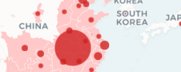
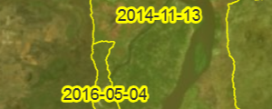
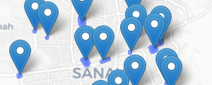
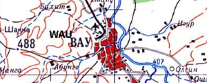
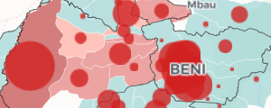

Tools, applications and tutorials produced with poor internet connection and Stack Overflow copy-pastes.
Tools, applications and tutorials produced with poor internet connection and Stack Overflow copy-pastes.



Covid-19 dashboard
Mapping of the beginning of the outbreak (until mid-Feb) using Node.js to scrap data from several websites.
Go to app


Wikimapia Data Export
Export the data from Wikimapia using a simplified interface to use its API.
Go to app

South Sudan soviet maps
Georeferenced and tiled 1:500,000 topographic soviet maps of South Sudan.
Go to map

Democratic Republic of Congo - Ebola 2018-2020 dashboard
Mapping of the DRC 2018-2020 Ebola Outbreak. Data from WHO / MoH.
Go to appFacebook Population Data in QGIS
How to use Facebook population datasets in QGIS to create population density maps.
Go to tuto